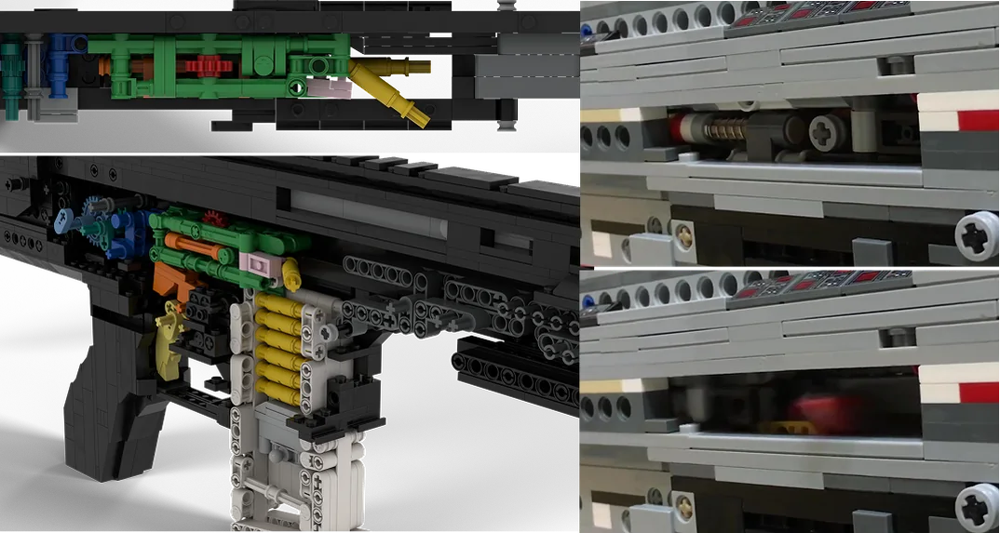

melty’s LEGO
Ultra-realistic LEGO replicas with shell ejection and blowback.
Creator · YouTube: @meltylego · since middle school
Skills
The project
melty’s LEGO is a passion project. In grade 6, I stumbled onto a community of LEGO Nerf gun builders and was fascinated by how intricately mechanical systems could work. I started out learning from tutorials on YouTube, eventually reverse engineering and inventing new mechanisms that I now share with a community of 10k subscribers.
What I learned
I distinctly remember my grandmother yelling at me to come eat or go to sleep, because I was so immersed in building. Looking back, that’s where it all started: taking a mechanism apart, figuring out why it works, and making it better. It’s the same habit I bring to engineering today, from snap-fit chassis to tolerancing, to approaching a totally new field (like drones & control theory) with enthusiasm.
As I grew older and busier, the channel and the LEGO gun community as a whole became less active. In senior year, I decided to start a website to share free designs and a Discord community to teach young builders and inspire them toward engineering, as I was inspired when I was younger. It gave me a great chance to reflect on what made it so intriguing and how I can approach my current work to spark that same passion, all of which helps me stay motivated and consistent in my current pursuits.
TreeTop Sweets
Another build for fun: in Autumn 2024, I proposed a candy dispenser to make student advising hours more engaging, and led a team of 4 through ideation, design and manufacturing as a mini capstone. It won first place in a cohort-wide competition and went on to be used by the ME department’s advisor.
all projects